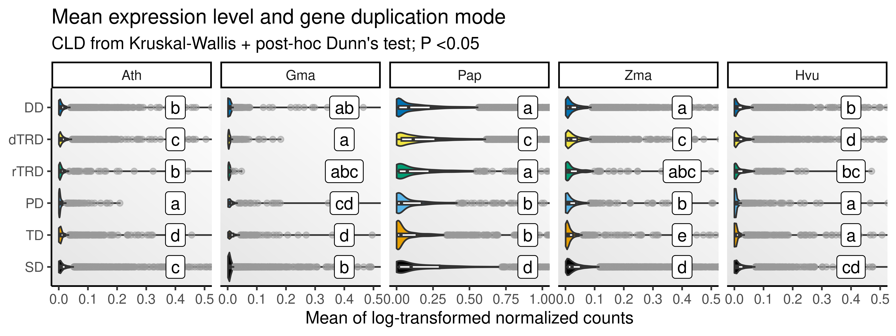
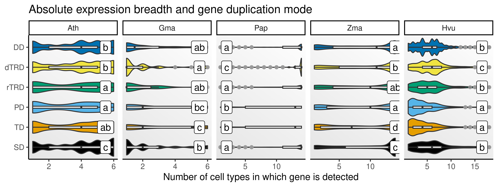
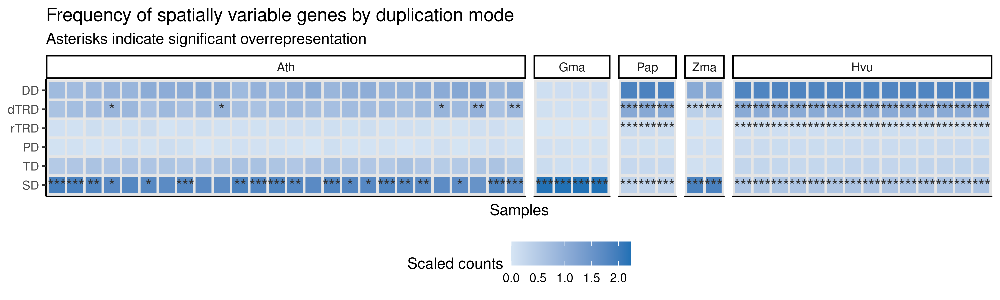

library(here)
library(tidyverse)
library(SpatialExperiment)
library(SummarizedExperiment)
library(DESpace)
library(patchwork)
set.seed(123) # for reproducibility
options(timeout = 1e6) # to download large data files
# Load helper functions
source(here("code", "utils.R"))
# Plot background
bg <- grid::linearGradient(colorRampPalette(c("gray90", "white"))(100))3 Gene-level analyses
In this chapter, we will investigate if different duplication modes are associated with differences in:
- Expression levels;
- Expression breadths;
- Spatial variability.
To start, let’s load required packages.
Let’s also load the SpatialExperiment objects created in chapter 1.
# Load `SpatialExperiment` objects
ath_spe <- readRDS(here("products", "result_files", "spe", "spe_ath.rds"))
gma_spe <- readRDS(here("products", "result_files", "spe", "spe_gma.rds"))
pap_spe <- readRDS(here("products", "result_files", "spe", "spe_pap.rds"))
zma_spe <- readRDS(here("products", "result_files", "spe", "spe_zma.rds"))
hvu_spe <- readRDS(here("products", "result_files", "spe", "spe_hvu.rds"))We will also need the duplicate pairs and genes obtained in chapter 2.
# Load duplicate pairs and genes
dup_list <- readRDS(here("products", "result_files", "dup_list.rds"))3.1 Expression levels of duplicated genes
Here, we will investigate if genes from particular duplication modes display significantly higher or lower expression levels compared to other duplication modes. We will start by calculating the sum and mean expression levels for all genes across samples combined.
# Combine all `SpatialExperiment` objects in a single list
spe_all <- list(
ath = ath_spe,
gma = gma_spe,
pap = pap_spe,
zma = zma_spe,
hvu = hvu_spe
)
# Get sum of gene expression levels across all samples
sum_all <- Reduce(rbind, lapply(names(spe_all), function(x) {
samples <- names(spe_all[[x]])
sum_df <- Reduce(rbind, lapply(samples, function(y) {
df <- rowSums(logcounts(spe_all[[x]][[y]])) |>
as.data.frame() |>
select(exp = 1) |>
tibble::rownames_to_column("gene") |>
inner_join(dup_list[[x]]$genes, by = "gene") |>
mutate(sample = y)
return(df)
})) |>
mutate(species = x)
return(sum_df)
})) |>
mutate(type = factor(type, levels = c("SD", "TD", "PD", "rTRD", "dTRD", "DD")))
# Get mean of gene expression levels across all samples
mean_all <- Reduce(rbind, lapply(names(spe_all), function(x) {
samples <- names(spe_all[[x]])
mean_df <- Reduce(rbind, lapply(samples, function(y) {
df <- rowMeans(logcounts(spe_all[[x]][[y]]), na.rm = TRUE) |>
as.data.frame() |>
select(exp = 1) |>
tibble::rownames_to_column("gene") |>
inner_join(dup_list[[x]]$genes, by = "gene") |>
mutate(sample = y)
return(df)
})) |>
mutate(species = x)
return(mean_df)
})) |>
mutate(type = factor(type, levels = c("SD", "TD", "PD", "rTRD", "dTRD", "DD")))Now, we will compare distributions using a Kruskal-Wallis test followed by a post-hoc Dunn test. Then, we will visualize distributions with CLD indicating significant differences (if any).
# Get summary estimates for all samples combined
## Sum
sum_combined <- sum_all |>
group_by(gene) |>
mutate(
csum = sum(exp),
species = str_to_title(species),
species = factor(species, levels = c("Ath", "Gma", "Pap", "Zma", "Hvu"))
) |>
ungroup() |>
select(gene, type, species, csum) |>
distinct(gene, .keep_all = TRUE)
## Mean
mean_combined <- mean_all |>
group_by(gene) |>
mutate(
cmean = mean(exp, na.rm = TRUE),
species = str_to_title(species),
species = factor(species, levels = c("Ath", "Gma", "Pap", "Zma", "Hvu"))
) |>
ungroup() |>
select(gene, type, species, cmean) |>
distinct(gene, .keep_all = TRUE)
# Compare distros and get CLDs
## Sum
sum_clds <- lapply(
split(sum_combined, sum_combined$species),
cld_kw_dunn,
var = "type", value = "csum"
) |>
bind_rows(.id = "species") |>
inner_join(
data.frame(
species = c("Ath", "Gma", "Pap", "Zma", "Hvu"),
x = c(3500, 2500, 5500, 4500, 3500)
)
) |>
mutate(species = factor(species, levels = c("Ath", "Gma", "Pap", "Zma", "Hvu"))) |>
dplyr::rename(type = Group)
## Mean
mean_clds <- lapply(
split(mean_combined, mean_combined$species),
cld_kw_dunn,
var = "type", value = "cmean"
) |>
bind_rows(.id = "species") |>
inner_join(
data.frame(
species = c("Ath", "Gma", "Pap", "Zma", "Hvu"),
x = c(0.4, 0.4, 0.9, 0.4, 0.4)
)
) |>
mutate(species = factor(species, levels = c("Ath", "Gma", "Pap", "Zma", "Hvu"))) |>
dplyr::rename(type = Group)
# Plot distros with CLDs
## Sum
p_sum_combined <- ggplot(sum_combined, aes(x = csum, y = type)) +
geom_violin(aes(fill = type), show.legend = FALSE) +
scale_fill_manual(values = palette.colors()) +
geom_boxplot(width = 0.1, outlier.color = "gray60", outlier.alpha = 0.5) +
geom_label(
data = sum_clds,
aes(x = x, y = type, label = Letter)
) +
facet_wrap(~species, nrow = 1, scales = "free_x") +
ggh4x::facetted_pos_scales(x = list(
scale_x_continuous(
limits = c(0, 4e3),
labels = scales::unit_format(unit = "K", scale = 1e-3)
),
scale_x_continuous(
limits = c(0, 3e3),
labels = scales::unit_format(unit = "K", scale = 1e-3)
),
scale_x_continuous(
limits = c(0, 6e3),
labels = scales::unit_format(unit = "K", scale = 1e-3)
),
scale_x_continuous(
limits = c(0, 5e3),
labels = scales::unit_format(unit = "K", scale = 1e-3)
),
scale_x_continuous(
limits = c(0, 4e3),
labels = scales::unit_format(unit = "K", scale = 1e-3)
)
)) +
labs(
x = "Sum of log-transformed normalized counts", y = NULL,
title = "Total expression levels and gene duplication mode",
subtitle = "CLD from Kruskal-Wallis + post-hoc Dunn's test; P <0.05"
) +
theme_classic() +
theme(panel.background = element_rect(fill = bg))
## Mean
p_mean_combined <- ggplot(mean_combined, aes(x = cmean, y = type)) +
geom_violin(aes(fill = type), show.legend = FALSE) +
scale_fill_manual(values = palette.colors()) +
geom_boxplot(width = 0.1, outlier.color = "gray60", outlier.alpha = 0.5) +
geom_label(
data = mean_clds,
aes(x = x, y = type, label = Letter)
) +
facet_wrap(~species, nrow = 1, scales = "free_x") +
ggh4x::facetted_pos_scales(x = list(
scale_x_continuous(limits = c(0, 0.5)),
scale_x_continuous(limits = c(0, 0.5)),
scale_x_continuous(limits = c(0, 1)),
scale_x_continuous(limits = c(0, 0.5)),
scale_x_continuous(limits = c(0, 0.5))
)) +
labs(
x = "Mean of log-transformed normalized counts", y = NULL,
title = "Mean expression level and gene duplication mode",
subtitle = "CLD from Kruskal-Wallis + post-hoc Dunn's test; P <0.05"
) +
theme_classic() +
theme(panel.background = element_rect(fill = bg))
The figures show that, overall, segmental, tandem, and proximal duplicates display higher expression levels compared to duplicated originating from other duplication modes, especially dispersed duplicates. In germinating barley seeds, however, retrotransposed duplicates display the highest expression values. Nevertheless, there seems to be an association between higher expression levels and duplication modes that tend to preserve cis-regulatory landscapes (SD, TD, and PD).
3.2 Expression breadths of duplicated genes
We will now calculate the expression breadths (i.e., number of cell types in which genes are expressed) for all duplicated genes, and test for differences in expression breadth by duplication mode.
We will start with the actual calculation of absolute expression breadth. Here, we will define gene i as expressed in cell type k if it is detected in at least 5% of the spots corresponding to cell type k.
#' Calculate the proportion of non-zero spots for each gene by cell type
#'
#' @param spe A SpatialExperiment object.
#' @param cell_type Character, name of the column with cell type information.
#'
#' @return A data frame with variables `gene`, `cell_type`, and `prop_detected`.
get_prop_detected <- function(spe, cell_type = "cell_type") {
prop_detected <- scuttle::aggregateAcrossCells(
spe, statistics = "prop.detected",
ids = spe[[cell_type]]
) |>
assay() |>
reshape2::melt() |>
dplyr::select(gene = Var1, cell_type = Var2, prop_detected = value) |>
mutate(cell_type = as.character(cell_type))
return(prop_detected)
}
# Get proportion of gene detection (non-zero counts) by cell type
prop_detected <- list(
Ath = lapply(spe_all$ath, get_prop_detected) |> bind_rows(.id = "sample"),
Gma = lapply(spe_all$gma, get_prop_detected, "annotation") |> bind_rows(.id = "sample"),
Pap = lapply(spe_all$pap, get_prop_detected, "clusters") |> bind_rows(.id = "sample"),
Zma = lapply(spe_all$zma, get_prop_detected, "cell_type") |> bind_rows(.id = "sample"),
Hvu = lapply(spe_all$hvu, get_prop_detected, "tissue") |> bind_rows(.id = "sample")
) |>
bind_rows(.id = "species")
# Calculate absolute expression breadth
eb <- prop_detected |>
group_by(species, gene, cell_type) |>
mutate(mean_prop = mean(prop_detected, na.rm = TRUE)) |>
ungroup() |>
filter(mean_prop >=0.01) |>
distinct(gene, cell_type, .keep_all = TRUE) |>
dplyr::count(species, gene) |>
inner_join(
bind_rows(
dup_list$ath$genes,
dup_list$gma$genes,
dup_list$pap$genes,
dup_list$zma$genes,
dup_list$hvu$genes
)
) |>
mutate(
species = factor(species, levels = c("Ath", "Gma", "Pap", "Zma", "Hvu")),
type = factor(type, levels = c("SD", "TD", "PD", "rTRD", "dTRD", "DD"))
)Now, we will test for differences by duplication mode using Kruskal-Wallis + post-hoc Dunn’s tests, as implemented in the wrapper function cld_kw_dunn.
# Test for differences in expression breadth by duplication mode
eb_test <- lapply(
split(eb, eb$species),
cld_kw_dunn,
var = "type", value = "n"
) |>
bind_rows(.id = "species") |>
inner_join(
data.frame(
species = c("Ath", "Gma", "Pap", "Zma", "Hvu"),
x = c(5.5, 5.5, 2, 14, 16.5)
)
) |>
mutate(species = factor(species, levels = c("Ath", "Gma", "Pap", "Zma", "Hvu"))) |>
dplyr::rename(type = Group)Next, we will visualize distributions of expression breadths for genes originating from different duplication modes.
# Plot distributions of absolute expression breadths
p_eb <- ggplot(eb, aes(x = n, y = type)) +
geom_violin(aes(fill = type), show.legend = FALSE) +
geom_boxplot(width = 0.1, outlier.color = "gray60", outlier.alpha = 0.5) +
scale_fill_manual(values = palette.colors()) +
geom_label(
data = eb_test,
aes(x = x, y = type, label = Letter)
) +
facet_wrap(~species, nrow = 1, scales = "free_x") +
theme_classic() +
theme(
panel.background = element_rect(fill = bg)
) +
labs(
title = "Absolute expression breadth and gene duplication mode",
subtitle = "CLD from Kruskal-Wallis + post-hoc Dunn's test; P <0.05",
x = "Number of cell types in which gene is detected",
y = NULL
)
The figure shows that there are significant differences in expression breadth depending on how genes were duplicated. Importantly, as we observed for expression levels, duplication mechanisms resulting in shared cis-regulatory landscapes (SD, TD, PD) tend to create genes with greater expression breadth (i.e., expressed in more cell types).
3.3 Spatial variability of duplicated genes
Here, we will identify spatially variable genes (SVGs) and test if they are enriched in genes originating from particular duplication modes. We will start by inferring SVGs using DESpace (Cai, Robinson, and Tiberi 2024) using cell types as spatial clusters. Genes will be considered SVGs if FDR <0.05.
# Define helper function to identify SVGs with DESpace
get_svg <- function(spe, spatial_cluster = "clusters") {
# Get gene-wise test statistics
res <- DESpace_test(
spe = spe,
spatial_cluster = spatial_cluster,
replicates = FALSE,
min_counts = 1,
min_non_zero_spots = 5
)
gc()
# Get a data frame of test statistics for significant SVGs
res_df <- res$gene_results |>
as.data.frame() |>
dplyr::filter(!is.na(FDR), FDR <= 0.05)
return(res_df)
}
# Identify SVGs
svgs <- list(
ath = lapply(ath_spe, get_svg, spatial_cluster = "cell_type"),
gma = lapply(gma_spe, get_svg, spatial_cluster = "annotation"),
pap = lapply(pap_spe, get_svg, spatial_cluster = "clusters"),
zma = lapply(zma_spe, get_svg, spatial_cluster = "cell_type"),
hvu = lapply(hvu_spe, get_svg, spatial_cluster = "tissue")
)Now, we will test if SVGs are enriched in duplicated genes from a particular duplication mode.
# Define helper function to perform ORA for duplication modes
ora_dupmode <- function(svg_df, dup_df) {
df <- HybridExpress::ora(
genes = svg_df$gene_id,
annotation = as.data.frame(dup_df),
background = dup_df$gene,
min_setsize = 2,
max_setsize = 1e8
)
return(df)
}
# Perform overrepresentation analysis for duplication modes
sp <- names(dup_list)
ora_svg_dup <- lapply(sp, function(x) {
df <- lapply(svgs[[x]], ora_dupmode, dup_list[[x]]$genes) |>
bind_rows(.id = "sample") |>
mutate(species = x)
return(df)
}) |>
bind_rows() |>
dplyr::select(species, sample, type = term, genes, all, padj)Interestingly, SVGs are enriched in SD-derived genes in most of the samples and in TRD-derived genes in some samples, revealing an association between these duplication modes and spatial variability in expression.
Next, let’s create a data frame summarizing the frequency of SVGs per duplication mode, highlighting overrepresented results.
# Define helper function to get frequency of SVGs per duplication mode
get_dup_freqs <- function(svg_list, dup_df, ora_df) {
freq_df <- lapply(svg_list, function(x) {
df <- left_join(x, dup_df, by = c("gene_id" = "gene")) |>
drop_na(type) |>
mutate(
type = factor(
type,
levels = c("SD", "TD", "PD", "rTRD", "dTRD", "DD")
)
) |>
dplyr::count(type, .drop = FALSE) |>
as.data.frame()
return(df)
}) |>
bind_rows(.id = "sample") |>
left_join(ora_df |> select(sample, type, padj)) |>
mutate(
symbol = case_when(
padj > 0.05 ~ "",
padj > 0.01 ~ "*",
padj > 0.001 ~ "**",
!is.na(padj) ~ "***",
TRUE ~ NA_character_
)
)
return(freq_df)
}
# Get frequency of SVGs per duplication mode
svg_dupmode_freqs <- lapply(sp, function(x) {
df <- get_dup_freqs(svgs[[x]], dup_list[[x]]$genes, ora_svg_dup) |>
mutate(species = x)
return(df)
}) |>
bind_rows() |>
mutate(
type = factor(type, levels = c("SD", "TD", "PD", "rTRD", "dTRD", "DD"))
) |>
distinct()Now, let’s visualize results as a heatmap with cells colored by scaled counts (by duplication mode) and significance asterisks highlighted.
# Create plot
p_heatmap <- svg_dupmode_freqs |>
mutate(
species = str_to_title(species),
species = factor(species, levels = c("Ath", "Gma", "Pap", "Zma", "Hvu"))
) |>
group_by(sample) |>
mutate(scaled_n = scale(n, center = FALSE)) |>
ungroup() |>
# Add code to scale counts by sample
ggplot(aes(x = sample, y = type, fill = scaled_n)) +
geom_tile(color = "gray90", linewidth = 0.8) +
geom_text(aes(label = symbol), color = "gray20", size = 4) +
facet_grid(. ~ species, scales = "free_x", space = "free") +
scale_fill_gradient(low = "#D6E5F4", high = "#2171B5") +
theme_classic() +
theme(
axis.text.x = element_blank(),
axis.ticks.x = element_blank(),
legend.position = "bottom"
) +
labs(
title = "Frequency of spatially variable genes by duplication mode",
subtitle = "Asterisks indicate significant overrepresentation",
x = "Samples", y = NULL, fill = "Scaled counts"
)
Saving objects
Finally, we will save important objects to reuse later.
# Save objects as .rds files ----
## SVGs
saveRDS(
svgs, compress = "xz",
file = here("products", "result_files", "svg_list.rds")
)
## Data frame with ORA results - duplication mode and SVGs
saveRDS(
ora_svg_dup, compress = "xz",
file = here("products", "result_files", "ORA_svg_and_duplication_mode.rds")
)
## Frequency of SVGs per duplication mode in each sample and species
saveRDS(
svg_dupmode_freqs, compress = "xz",
file = here("products", "result_files", "svg_frequency_by_dupmode.rds")
)
# Save plots ----
saveRDS(
p_sum_combined, compress = "xz",
file = here("products", "plots", "total_expression_by_duplication_mode.rds")
)
saveRDS(
p_mean_combined, compress = "xz",
file = here("products", "plots", "mean_expression_by_duplication_mode.rds")
)
saveRDS(
p_eb, compress = "xz",
file = here("products", "plots", "expression_breadth_by_duplication_mode.rds")
)
saveRDS(
p_heatmap, compress = "xz",
file = here("products", "plots", "heatmap_svgs_by_dupmode.rds")
)Session info
This document was created under the following conditions:
─ Session info ───────────────────────────────────────────────────────────────
setting value
version R version 4.4.1 (2024-06-14)
os Ubuntu 22.04.4 LTS
system x86_64, linux-gnu
ui X11
language (EN)
collate en_US.UTF-8
ctype en_US.UTF-8
tz Europe/Brussels
date 2025-04-23
pandoc 3.2 @ /usr/lib/rstudio/resources/app/bin/quarto/bin/tools/x86_64/ (via rmarkdown)
─ Packages ───────────────────────────────────────────────────────────────────
package * version date (UTC) lib source
abind 1.4-5 2016-07-21 [1] CRAN (R 4.4.1)
assertthat 0.2.1 2019-03-21 [1] CRAN (R 4.4.1)
backports 1.5.0 2024-05-23 [1] CRAN (R 4.4.1)
beeswarm 0.4.0 2021-06-01 [1] CRAN (R 4.4.1)
Biobase * 2.64.0 2024-04-30 [1] Bioconductor 3.19 (R 4.4.1)
BiocGenerics * 0.50.0 2024-04-30 [1] Bioconductor 3.19 (R 4.4.1)
BiocParallel 1.38.0 2024-04-30 [1] Bioconductor 3.19 (R 4.4.1)
broom 1.0.6 2024-05-17 [1] CRAN (R 4.4.1)
car 3.1-2 2023-03-30 [1] CRAN (R 4.4.1)
carData 3.0-5 2022-01-06 [1] CRAN (R 4.4.1)
cli 3.6.3 2024-06-21 [1] CRAN (R 4.4.1)
codetools 0.2-20 2024-03-31 [1] CRAN (R 4.4.1)
colorspace 2.1-0 2023-01-23 [1] CRAN (R 4.4.1)
cowplot 1.1.3 2024-01-22 [1] CRAN (R 4.4.1)
crayon 1.5.3 2024-06-20 [1] CRAN (R 4.4.1)
data.table 1.15.4 2024-03-30 [1] CRAN (R 4.4.1)
DelayedArray 0.30.1 2024-05-07 [1] Bioconductor 3.19 (R 4.4.1)
DESpace * 1.4.0 2024-04-30 [1] Bioconductor 3.19 (R 4.4.1)
digest 0.6.36 2024-06-23 [1] CRAN (R 4.4.1)
dplyr * 1.1.4 2023-11-17 [1] CRAN (R 4.4.1)
edgeR 4.2.1 2024-07-14 [1] Bioconductor 3.19 (R 4.4.1)
evaluate 0.24.0 2024-06-10 [1] CRAN (R 4.4.1)
fansi 1.0.6 2023-12-08 [1] CRAN (R 4.4.1)
farver 2.1.2 2024-05-13 [1] CRAN (R 4.4.1)
fastmap 1.2.0 2024-05-15 [1] CRAN (R 4.4.1)
forcats * 1.0.0 2023-01-29 [1] CRAN (R 4.4.1)
generics 0.1.3 2022-07-05 [1] CRAN (R 4.4.1)
GenomeInfoDb * 1.40.1 2024-05-24 [1] Bioconductor 3.19 (R 4.4.1)
GenomeInfoDbData 1.2.12 2024-07-24 [1] Bioconductor
GenomicRanges * 1.56.1 2024-06-12 [1] Bioconductor 3.19 (R 4.4.1)
ggbeeswarm 0.7.2 2023-04-29 [1] CRAN (R 4.4.1)
ggforce 0.4.2 2024-02-19 [1] CRAN (R 4.4.1)
ggh4x 0.2.8 2024-01-23 [1] CRAN (R 4.4.1)
ggnewscale 0.5.0 2024-07-19 [1] CRAN (R 4.4.1)
ggplot2 * 3.5.1 2024-04-23 [1] CRAN (R 4.4.1)
ggpubr 0.6.0 2023-02-10 [1] CRAN (R 4.4.1)
ggsignif 0.6.4.9000 2024-12-12 [1] Github (const-ae/ggsignif@705495f)
glue 1.7.0 2024-01-09 [1] CRAN (R 4.4.1)
gtable 0.3.5 2024-04-22 [1] CRAN (R 4.4.1)
here * 1.0.1 2020-12-13 [1] CRAN (R 4.4.1)
hms 1.1.3 2023-03-21 [1] CRAN (R 4.4.1)
htmltools 0.5.8.1 2024-04-04 [1] CRAN (R 4.4.1)
htmlwidgets 1.6.4 2023-12-06 [1] CRAN (R 4.4.1)
httr 1.4.7 2023-08-15 [1] CRAN (R 4.4.1)
IRanges * 2.38.1 2024-07-03 [1] Bioconductor 3.19 (R 4.4.1)
jsonlite 1.8.8 2023-12-04 [1] CRAN (R 4.4.1)
knitr 1.48 2024-07-07 [1] CRAN (R 4.4.1)
labeling 0.4.3 2023-08-29 [1] CRAN (R 4.4.1)
lattice 0.22-6 2024-03-20 [1] CRAN (R 4.4.1)
lifecycle 1.0.4 2023-11-07 [1] CRAN (R 4.4.1)
limma 3.60.4 2024-07-17 [1] Bioconductor 3.19 (R 4.4.1)
locfit 1.5-9.10 2024-06-24 [1] CRAN (R 4.4.1)
lubridate * 1.9.3 2023-09-27 [1] CRAN (R 4.4.1)
magick 2.8.4 2024-07-14 [1] CRAN (R 4.4.1)
magrittr 2.0.3 2022-03-30 [1] CRAN (R 4.4.1)
MASS 7.3-61 2024-06-13 [1] CRAN (R 4.4.1)
Matrix 1.7-0 2024-04-26 [1] CRAN (R 4.4.1)
MatrixGenerics * 1.16.0 2024-04-30 [1] Bioconductor 3.19 (R 4.4.1)
matrixStats * 1.3.0 2024-04-11 [1] CRAN (R 4.4.1)
munsell 0.5.1 2024-04-01 [1] CRAN (R 4.4.1)
patchwork * 1.2.0 2024-01-08 [1] CRAN (R 4.4.1)
pillar 1.9.0 2023-03-22 [1] CRAN (R 4.4.1)
pkgconfig 2.0.3 2019-09-22 [1] CRAN (R 4.4.1)
polyclip 1.10-7 2024-07-23 [1] CRAN (R 4.4.1)
purrr * 1.0.2 2023-08-10 [1] CRAN (R 4.4.1)
R6 2.5.1 2021-08-19 [1] CRAN (R 4.4.1)
Rcpp 1.0.13 2024-07-17 [1] CRAN (R 4.4.1)
readr * 2.1.5 2024-01-10 [1] CRAN (R 4.4.1)
rjson 0.2.21 2022-01-09 [1] CRAN (R 4.4.1)
rlang 1.1.4 2024-06-04 [1] CRAN (R 4.4.1)
rmarkdown 2.27 2024-05-17 [1] CRAN (R 4.4.1)
rprojroot 2.0.4 2023-11-05 [1] CRAN (R 4.4.1)
rstatix 0.7.2 2023-02-01 [1] CRAN (R 4.4.1)
rstudioapi 0.16.0 2024-03-24 [1] CRAN (R 4.4.1)
S4Arrays 1.4.1 2024-05-20 [1] Bioconductor 3.19 (R 4.4.1)
S4Vectors * 0.42.1 2024-07-03 [1] Bioconductor 3.19 (R 4.4.1)
scales 1.3.0 2023-11-28 [1] CRAN (R 4.4.1)
sessioninfo 1.2.2 2021-12-06 [1] CRAN (R 4.4.1)
SingleCellExperiment * 1.26.0 2024-04-30 [1] Bioconductor 3.19 (R 4.4.1)
SparseArray 1.4.8 2024-05-24 [1] Bioconductor 3.19 (R 4.4.1)
SpatialExperiment * 1.14.0 2024-05-01 [1] Bioconductor 3.19 (R 4.4.1)
statmod 1.5.0 2023-01-06 [1] CRAN (R 4.4.1)
stringi 1.8.4 2024-05-06 [1] CRAN (R 4.4.1)
stringr * 1.5.1 2023-11-14 [1] CRAN (R 4.4.1)
SummarizedExperiment * 1.34.0 2024-05-01 [1] Bioconductor 3.19 (R 4.4.1)
tibble * 3.2.1 2023-03-20 [1] CRAN (R 4.4.1)
tidyr * 1.3.1 2024-01-24 [1] CRAN (R 4.4.1)
tidyselect 1.2.1 2024-03-11 [1] CRAN (R 4.4.1)
tidyverse * 2.0.0 2023-02-22 [1] CRAN (R 4.4.1)
timechange 0.3.0 2024-01-18 [1] CRAN (R 4.4.1)
tweenr 2.0.3 2024-02-26 [1] CRAN (R 4.4.1)
tzdb 0.4.0 2023-05-12 [1] CRAN (R 4.4.1)
UCSC.utils 1.0.0 2024-04-30 [1] Bioconductor 3.19 (R 4.4.1)
utf8 1.2.4 2023-10-22 [1] CRAN (R 4.4.1)
vctrs 0.6.5 2023-12-01 [1] CRAN (R 4.4.1)
vipor 0.4.7 2023-12-18 [1] CRAN (R 4.4.1)
withr 3.0.0 2024-01-16 [1] CRAN (R 4.4.1)
xfun 0.51 2025-02-19 [1] CRAN (R 4.4.1)
XVector 0.44.0 2024-04-30 [1] Bioconductor 3.19 (R 4.4.1)
yaml 2.3.9 2024-07-05 [1] CRAN (R 4.4.1)
zlibbioc 1.50.0 2024-04-30 [1] Bioconductor 3.19 (R 4.4.1)
[1] /home/faalm/R/x86_64-pc-linux-gnu-library/4.4
[2] /usr/local/lib/R/site-library
[3] /usr/lib/R/site-library
[4] /usr/lib/R/library
──────────────────────────────────────────────────────────────────────────────References
Cai, Peiying, Mark D Robinson, and Simone Tiberi. 2024. “DESpace: Spatially Variable Gene Detection via Differential Expression Testing of Spatial Clusters.” Bioinformatics 40 (2): btae027.